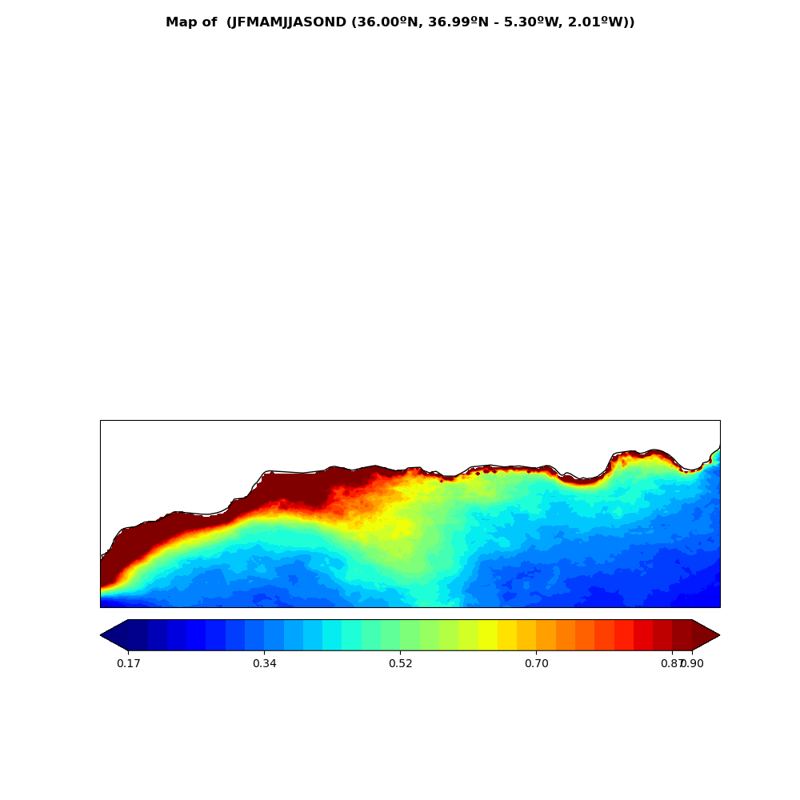

Usage Example¶
Spy4Cast: Preprocess, MCA and Crossvalidation¶
Here is an example of how you can use Spy4Cast API to RUN the full Spy4Cast methodology and use the included plotting functions.
Click here to download
from spy4cast import Dataset, Region, Month
from spy4cast.spy4cast import Preprocess, MCA, Crossvalidation
DATASETS_FOLDER = '/Users/Shared/datasets'
PREDICTOR_NAME = "oisst_v2_mean_monthly.nc"
PREDICTOR_VAR = "sst"
PREDICTAND_NAME = "chl_1km_monthly_Sep1997_Dec2020.nc"
PREDICTAND_VAR = "CHL"
predictor = Dataset(PREDICTOR_NAME, DATASETS_FOLDER).open(PREDICTOR_VAR)
oisst_region = Region(
lat0=5, latf=25,
lon0=-75, lonf=-20,
month0=Month.AUG, monthf=Month.SEP,
year0=1997, yearf=2019,
) # PREDICTOR: Y
predictor.slice(oisst_region, skip=3)
predictand = Dataset(PREDICTAND_NAME, DATASETS_FOLDER).open(PREDICTAND_VAR)
chl_region = Region(
lat0=36, latf=37,
lon0=-5.3, lonf=-2,
month0=Month.MAR, monthf=Month.APR,
year0=1998, yearf=2020,
) # PRECITAND: Z
predictand.slice(chl_region, skip=0)
DATA_FOLDER = 'data-03122022'
PLOTS_FOLDER = 'plots-03122022'
PREDICTOR_PREPROCESSED_PREFIX = 'predictor_'
PREDICTAND_PREPROCESSED_PREFIX = 'predictand_'
MCA_PREFIX = 'mca_'
MCA_PLOT_NAME = 'mca.png'
CROSS_PREFIX = 'cross_'
CROSS_PLOT_NAME = 'cross.png'
LOAD_PREPROCESSED = False
LOAD_MCA = False
LOAD_CROSS = False
if LOAD_PREPROCESSED:
predictor_preprocessed = Preprocess.load(PREDICTOR_PREPROCESSED_PREFIX, DATA_FOLDER)
predictand_preprocessed = Preprocess.load(PREDICTAND_PREPROCESSED_PREFIX, DATA_FOLDER)
else:
predictor_preprocessed = Preprocess(predictor)
predictand_preprocessed = Preprocess(predictand)
predictor_preprocessed.save(PREDICTOR_PREPROCESSED_PREFIX, DATA_FOLDER)
predictand_preprocessed.save(PREDICTAND_PREPROCESSED_PREFIX, DATA_FOLDER)
nm = 3
alpha = .1
if LOAD_MCA:
mca = MCA.load(MCA_PREFIX, DATA_FOLDER, dsy=predictor_preprocessed, dsz=predictand_preprocessed)
else:
mca = MCA(predictor_preprocessed, predictand_preprocessed, nm, alpha)
mca.save(MCA_PREFIX, DATA_FOLDER)
mca.plot(save_fig=True, cmap='viridis', name=MCA_PLOT_NAME,
figsize=(14, 8),
width_ratios=[1, 1, 1],
folder=PLOTS_FOLDER,)
if LOAD_CROSS:
cross = Crossvalidation.load(CROSS_PREFIX, DATA_FOLDER, dsy=predictor_preprocessed, dsz=predictand_preprocessed)
else:
cross = Crossvalidation(predictor_preprocessed, predictand_preprocessed, nm, alpha)
cross.save(CROSS_PREFIX, DATA_FOLDER)
# cross.plot(save_fig=True, folder=PLOTS_FOLDER, name=CROSS_PLOT_NAME, version='default', mca=mca)
cross.plot(save_fig=True, folder=PLOTS_FOLDER, name=CROSS_PLOT_NAME, version=2, mca=mca)
import matplotlib.pyplot as plt
plt.show()
Here is an example of how you can use Spy4Cast API to PLOT the previously ran Spy4Cast methodology.
Click here to download
from spy4cast import spy4cast
import matplotlib.pyplot as plt
PLOTS_DIR = 'plots'
SAVED_DATA_DIR = 'saved_tna'
y_ppcessed = spy4cast.Preprocess.load('save_preprocessed_y_', folder=SAVED_DATA_DIR)
z_ppcessed = spy4cast.Preprocess.load('save_preprocessed_z_', folder=SAVED_DATA_DIR)
mca = spy4cast.MCA.load('save_mca_', SAVED_DATA_DIR, dsy=y_ppcessed, dsz=z_ppcessed)
cross = spy4cast.Crossvalidation.load('save_cross_', SAVED_DATA_DIR, dsy=y_ppcessed, dsz=z_ppcessed)
# FAST PLOTS
y_ppcessed.plot(save_fig=True, selected_year=2005, folder=PLOTS_DIR, name='sst-2005.png')
z_ppcessed.plot(cmap='viridis', selected_year=2006, folder=PLOTS_DIR, name='chl-2006.png')
mca.plot(save_fig=True, cmap='viridis', folder=PLOTS_DIR, name='mca-sst-chl.png')
cross.plot(save_fig=True, folder=PLOTS_DIR, name='crossvalidation-chl-sst.png')
cross.plot_zhat(2005, folder=PLOTS_DIR, name='zhat-2005.png')
cross.plot_zhat(2006, folder=PLOTS_DIR, name='zhat-2006.png')
cross.plot_zhat(2007, folder=PLOTS_DIR, name='zhat-2007.png')
# Show all the created plots
plt.show()
Here is an example of how you can use Spy4Cast API to RUN the Spy4Cast methodology and plot it using CUSTOM PLOTTING FUNCTIONS.
Click here to download
# mypy: ignore-errors
import numpy as np
from matplotlib import pyplot as plt
from matplotlib.ticker import MaxNLocator
from spy4cast import Dataset, Month, Region
from spy4cast.meteo import Clim
from spy4cast.spy4cast import Preprocess, MCA, Crossvalidation
import cartopy.crs as ccrs
DATASET_DIR = '/Users/Shared/datasets'
PREDICTOR_NAME = "oisst_v2_mean_monthly.nc"
PREDICTOR_VAR = "sst"
PREDICTAND_NAME = "chl_1km_monthly_Sep1997_Dec2020.nc"
PREDICTAND_VAR = "CHL"
def plot_ts(
time, arr, ax, title, ylabel=None, xlabel=None, color=None, xtickslabels=None, only_int_xlabels=False, label=None,
):
ax.plot(time, arr, linewidth=3, color=color, label=label)
ax.set_xlim(time[0], time[-1])
if xtickslabels is not None:
ax.set_xticklabels(xtickslabels)
ax.set_xlabel(xlabel)
ax.set_ylabel(ylabel)
if title is not None:
ax.set_title(title)
if only_int_xlabels:
ax.xaxis.set_major_locator(MaxNLocator(integer=True))
def plot_map(
arr, lat, lon, fig, ax, title=None, levels=None, xlim=None, ylim=None, cmap=None, ticks=None
):
if levels is None:
n = 30
_std = np.nanstd(arr)
_m = np.nanmean(arr)
levels = np.unique(np.linspace(_m - _std, _m + _std, n))
if len(levels) <= 1:
levels = None
if ticks is None and levels is not None:
nticks = 6
ticks = levels[np.arange(0, len(levels), len(levels) // nticks)]
cmap = 'bwr' if cmap is None else cmap
xlim = sorted((lon[0], lon[-1])) if xlim is None else xlim
ylim = sorted((lat[-1], lat[0])) if ylim is None else ylim
im = ax.contourf(
lon, lat, arr, cmap=cmap, levels=levels,
extend='both', transform=ccrs.PlateCarree()
)
cb = fig.colorbar(
im, ax=ax, orientation='horizontal', pad=0.02,
ticks=ticks,
)
ax.coastlines()
cb.ax.tick_params(labelsize=11)
ax.set_xlim(*xlim)
ax.set_ylim(*ylim)
# # axs.margins(0)
if title is not None:
ax.set_title(title)
def plot_cross(
cross, title, cmap, map_ticks,
):
fig = plt.figure(figsize=(18, 8))
nrows = 3
ncols = 2
axs = (
fig.add_subplot(nrows, ncols, 1, projection=ccrs.PlateCarree(00)),
fig.add_subplot(nrows, ncols, 2),
fig.add_subplot(nrows, ncols, 3),
fig.add_subplot(nrows, ncols, 4),
fig.add_subplot(nrows, ncols, 5),
fig.add_subplot(nrows, ncols, 6),
)
nzlat = len(cross.dsz.lat)
nzlon = len(cross.dsz.lon)
# nztime = len(ts)
# ------ r_z_zhat_s and p_z_zhat_s ------ #
# Correlation map
d = cross.r_z_zhat_s_accumulated_modes[-1, :].transpose().reshape((nzlat, nzlon))
_mean = np.nanmean(d)
_std = np.nanstd(d)
mx = _mean + _std
mn = _mean - _std
plot_map(
d, cross.dsz.lat, cross.dsz.lon, fig, axs[0],
'Correlation in space between z and zhat',
cmap=cmap,
ticks=(np.arange(round(mn * 10) / 10, np.floor(mx * 10) / 10 + .05, .1) if map_ticks is None and not np.isnan(
_mean) and not np.isnan(_std) else map_ticks)
)
hatches = d.copy()
hatches[((cross.p_z_zhat_s_accumulated_modes[-1, :] > cross.alpha) | (
cross.r_z_zhat_s_accumulated_modes[-1, :] < 0)).transpose().reshape((nzlat, nzlon))] = np.nan
axs[0].contourf(
cross.dsz.lon, cross.dsz.lat, hatches,
colors='none', hatches='..', extend='both',
transform=ccrs.PlateCarree()
)
# ^^^^^^ r_z_zhat_s and p_z_zhat_s ^^^^^^ #
# ------ r_z_zhat_t and p_z_zhat_t ------ #
axs[1].bar(cross.dsz.time.values, cross.r_z_zhat_t_accumulated_modes[-1, :])
axs[1].xaxis.set_major_locator(MaxNLocator(integer=True))
axs[1].scatter(
cross.dsz.time[cross.p_z_zhat_t_accumulated_modes[-1, :] <= cross.alpha],
cross.p_z_zhat_t_accumulated_modes[-1, :][cross.p_z_zhat_t_accumulated_modes[-1, :] <= cross.alpha]
)
axs[1].set_title('Correlation in space between z and zhat')
axs[1].grid(True)
# ^^^^^^ r_z_zhat_t and p_z_zhat_t ^^^^^^ #
# ------ scf ------ #
for mode in range(cross.scf.shape[0]):
plot_ts(
time=cross.dsy.time.values,
arr=cross.scf[mode],
ax=axs[2],
label=f'Mode {mode + 1}',
title='Squared convariance fraction',
only_int_xlabels=True,
)
axs[2].legend()
axs[2].grid(True)
# ^^^^^^ scf ^^^^^^ #
# ^^^^^^ Us ^^^^^^ #
mean = cross.us.mean(2)
std = np.std(cross.us, axis=2)
for mode in range(mean.shape[0]):
axs[3 + mode].grid(True)
axs[3 + mode].errorbar(
cross.dsy.time, mean[mode], yerr=np.abs(std[mode]), label='std', color='orange', linewidth=3,
ecolor='purple'
)
axs[3 + mode].set_title(
f'Us for mode {mode + 1}'
)
axs[3 + mode].legend()
fig.suptitle(title)
fig.subplots_adjust(hspace=.4)
def plot_mca(mca, title, cmap, suy_ticks, suz_ticks, signs):
# EXPLICADO EN PARTE FINAL DEL VIDEO
# vvvvvvvvvvvvvvvvvvvvvvvvvvvvvvvvvvvvvvvvvvvvvvvvvvvvvvvvvvvvvvvvvvvvvvvvvvvvvvvv
# fig2 = plt.figure()
# ax2 = fig2.add_subplot(projection=ccrs.PlateCarree())
# _std = np.nanstd(mca.SUY)
# _m = np.nanmean(mca.SUY)
# bound = max(abs(_m - _std), abs(_m + _std))
# levels = np.linspace(-bound, bound, 20)
# xlim = sorted((mca.dsy.lon.values[0], mca.dsy.lon.values[-1]))
# ylim = sorted((mca.dsy.lat.values[-1], mca.dsy.lat.values[0]))
#
# t = mca.SUY[:, 1].transpose().reshape((len(mca.dsy.lat), len(mca.dsy.lon)))
# th = mca.RUY[:, 1].transpose().reshape((len(mca.dsy.lat), len(mca.dsy.lon)))
#
# plot_map(
# t, mca.dsy.lat, mca.dsy.lon, fig2, ax2, None,
# levels=levels, xlim=xlim, ylim=ylim, cmap='bwr', ticks=suy_ticks,
# )
# ax2.contourf(
# mca.dsy.lon, mca.dsy.lat, th, colors='none', hatches='..', extend='both',
# transform=ccrs.PlateCarree()
# )
# fig2.savefig('suy2.png')
# ^^^^^^^^^^^^^^^^^^^^^^^^^^^^^^^^^^^^^^^^^^^^^^^^^^^^^^^^^^^^^^^^^^^^^^^^^^^^^^^^^
nrows = 3
ncols = 3
fig: plt.Figure = plt.figure(figsize=(18, 5))
axs = (
fig.add_subplot(nrows, ncols, 1),
fig.add_subplot(nrows, ncols, 2),
fig.add_subplot(nrows, ncols, 3),
fig.add_subplot(nrows, ncols, 4, projection=ccrs.PlateCarree(0)),
fig.add_subplot(nrows, ncols, 5, projection=ccrs.PlateCarree(0)),
fig.add_subplot(nrows, ncols, 6, projection=ccrs.PlateCarree(0)),
fig.add_subplot(nrows, ncols, 7, projection=ccrs.PlateCarree(0)),
fig.add_subplot(nrows, ncols, 8, projection=ccrs.PlateCarree(0)),
fig.add_subplot(nrows, ncols, 9, projection=ccrs.PlateCarree(0)),
)
# Plot timeseries
for i, ax in enumerate(axs[:3]):
# # ax.margins(0)
plot_ts(
time=mca.dsy.time.values,
arr=mca.Us[i, :],
ax=ax,
title=f'Us Vs mode {i + 1}',
color='green',
label='Us'
)
plot_ts(
time=mca.dsz.time.values,
arr=mca.Vs[i, :],
ax=ax,
title=None,
color='blue',
label='Vs'
)
ax.legend()
ax.grid(True)
axs[0].legend(loc='upper left')
# suy = SUY
# suy[suy == 0.0] = np.nan
n = 20
for i, (var_name, su, ru, lats, lons, cm, ticks) in enumerate((
('SUY', mca.SUY, mca.RUY_sig, mca.dsy.lat, mca.dsy.lon, 'bwr', suy_ticks),
('SUZ', mca.SUZ, mca.RUZ_sig, mca.dsz.lat, mca.dsz.lon, cmap, suz_ticks)
)):
_std = np.nanstd(su)
_m = np.nanmean(su)
bound = max(abs(_m - _std), abs(_m + _std))
levels = np.linspace(-bound, bound, n)
xlim = sorted((lons.values[0], lons.values[-1]))
ylim = sorted((lats.values[-1], lats.values[0]))
for j, ax in enumerate(axs[3 * (i + 1):3 * (i + 1) + 3]):
title = f'{var_name} mode {j + 1}. ' \
f'SCF={mca.scf[j] * 100:.01f}'
t = su[:, j].transpose().reshape((len(lats), len(lons)))
th = ru[:, j].transpose().reshape((len(lats), len(lons)))
if signs is not None:
if signs[j]:
t *= -1
plot_map(
t, lats, lons, fig, ax, title,
levels=levels, xlim=xlim, ylim=ylim, cmap=cm, ticks=ticks,
)
ax.contourf(
lons, lats, th, colors='none', hatches='..', extend='both',
transform=ccrs.PlateCarree()
)
fig.suptitle(title, fontweight='bold')
fig.subplots_adjust(hspace=.4)
predictor_region = Region(
lat0=5, latf=45,
lon0=-90, lonf=-5,
month0=Month.JUN, monthf=Month.JUL,
year0=1997, yearf=2019,
)
predictand_region = Region(
lat0=36, latf=37,
lon0=-5.3, lonf=-2,
month0=Month.MAR, monthf=Month.APR,
year0=1998, yearf=2020,
)
predictor = Dataset(PREDICTOR_NAME, folder=DATASET_DIR).open(PREDICTOR_VAR).slice(predictor_region, skip=3)
predictand = Dataset(PREDICTAND_NAME, folder=DATASET_DIR).open(PREDICTAND_VAR).slice(predictand_region, skip=3)
predictor_ppcessed = Preprocess(predictor)
predictand_ppcessed = Preprocess(predictand)
nm = 3
alpha = 0.1
# mca = MCA.load('mca_prueba_11062023_', dsy=predictor_ppcessed, dsz=predictand_ppcessed)
mca = MCA(predictor_ppcessed, predictand_ppcessed, nm, alpha) # Line that takes time
# mca.save('mca_prueba_11062023_')
plot_mca(mca, 'MCA TUTORIAL', 'viridis', np.arange(-0.25, 0.30, 0.1), np.arange(-0.15, 0.20, 0.1), signs=[False, False, False])
cross = Crossvalidation.load('cross_prueba_11062023_', dsy=predictor_ppcessed, dsz=predictand_ppcessed)
# cross = Crossvalidation(predictor_ppcessed, predictand_ppcessed, nm, alpha)
# cross.save('cross_prueba_11062023_')
plot_cross(cross, 'Spy4cast Cross Prueba', 'viridis', None)
plt.show()
Climatology¶
Here is an example of how you can use Spy4Cast API to plot the climatology of a given .nc dataset
from spy4cast.meteo import Clim
from spy4cast import Month, Region, Dataset
# Define constants ---------------------------------------------------------------------------------- #
DATASET_DIR = '/Users/Shared/datasets/'
PLOTS_DIR = 'plots'
PLOT_DATA_DIR = 'data-clim'
chl_1km_monthly_Sep1997_Dec2020 = 'chl_1km_monthly_Sep1997_Dec2020.nc'
CHL = 'CHL'
chl_region = Region(36, 37, -5.3, -2, Month.MAR, Month.APR, 1998, 2020)
ds = Dataset(chl_1km_monthly_Sep1997_Dec2020, DATASET_DIR).open(CHL).slice(chl_region)
map_clim = Clim(ds, 'map')
map_clim.save('map_climatology', PLOT_DATA_DIR)
map_clim = Clim.load('map_climatology', PLOT_DATA_DIR, type='map')
map_clim.plot(show_plot=True, save_fig=True, name='clim-map-example.png', cmap='jet')
ts_clim = Clim(ds, 'ts')
ts_clim.save('ts_climatology', PLOT_DATA_DIR)
ts_clim = Clim.load('ts_climatology', PLOT_DATA_DIR, type='ts')
ts_clim.plot(show_plot=True, save_fig=True, name='clim-ts-example.png')
Output:
{kind=link}

Anomaly¶
Here is an example of how you can use Spy4Cast API to plot the anomaly of a given .nc dataset
from spy4cast.meteo import Anom
from spy4cast import Month, Region, Dataset
# Define constants ---------------------------------------------------------------------------------- #
DATASET_DIR = '/Users/Shared/datasets/'
PLOTS_DIR = 'plots'
PLOT_DATA_DIR = 'data-anom'
chl_1km_monthly_Sep1997_Dec2020 = 'chl_1km_monthly_Sep1997_Dec2020.nc'
CHL = 'CHL'
chl_region = Region(30, 90, -5.3, -2, Month.MAR, Month.APR, 1998, 2020)
ds = Dataset(chl_1km_monthly_Sep1997_Dec2020, DATASET_DIR).open(CHL).slice(chl_region)
map_anom = Anom(ds, 'map')
map_anom.save('map_anomaly', PLOT_DATA_DIR)
# map_anom = Anom.load('map_anomaly', PLOT_DATA_DIR, type='map')
map_anom.plot(show_plot=True, save_fig=True, year=1999, name='anom-map-example.png', cmap='jet')
ts_anom = Anom(ds, 'ts')
ts_anom.save('ts_anomaly', PLOT_DATA_DIR)
# ts_anom = Anom.load('ts_anomaly', PLOT_DATA_DIR, type='ts')
ts_anom.plot(show_plot=True, save_fig=True, name='anom-ts-example.png')
Output: